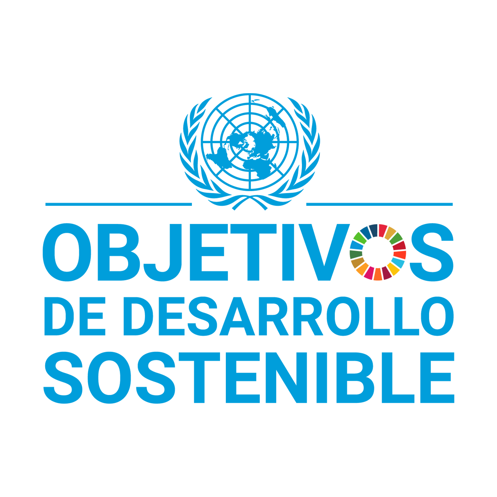

Fin de la pobreza
Pilar Redilla
Hambre cero
Lorenzo Gómez
Salud y bienestar
Sara Redondo
Educación de calidad
Blanca de Querol
Igualdad de genero
Agua limpia y saneamiento
Lydia Vázquez
Energía asequible y no contaminante
María Fraile
Trabajo decente y crecimiento económico
Nerea Ortiz
Industria, innovación e infraestructura
Rui Cunha
Reducción de las desigualdades
Marita Alva
Ciudades y comunidades sostenibles
Sofía Dobeson
Producción y consumo responsables
Elvira Gómez
Acción por el clima
Judith Fernández-Salinero
Vida submarina
Manuel Carnerero
Vida de ecosistemas terrestres
Sicilia López
Paz, justicia e instituciones sólidas
Alianzas para lograr los objetivos
Adrián Somolinos
